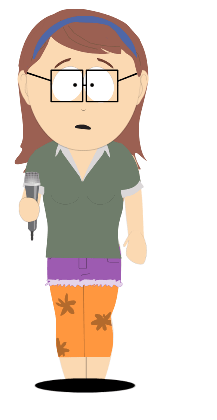
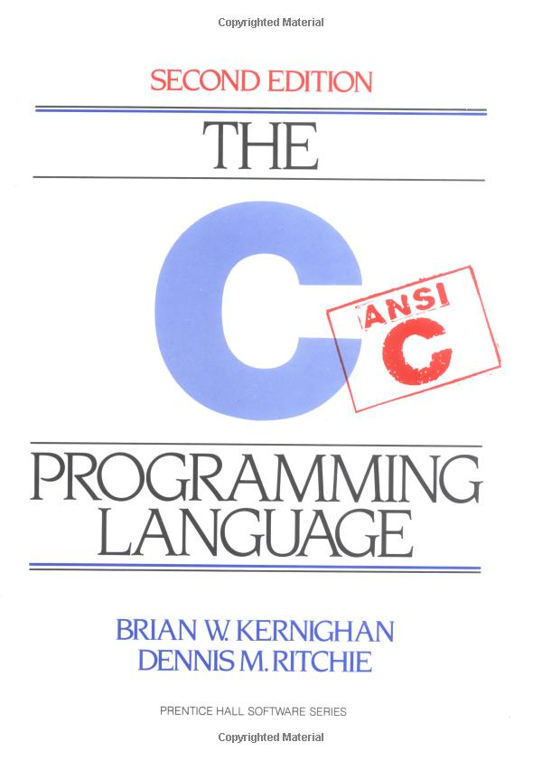
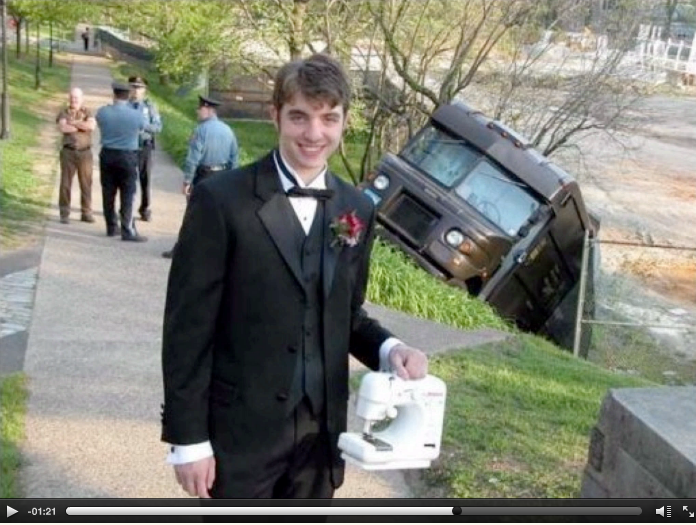
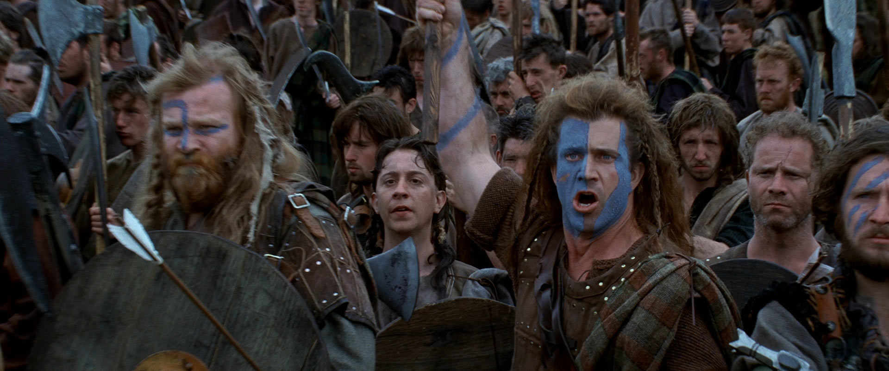
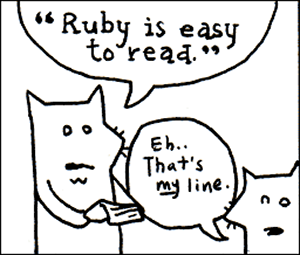
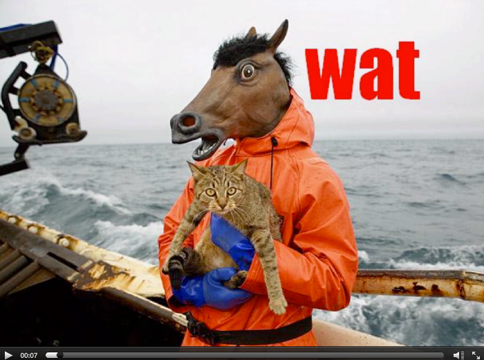
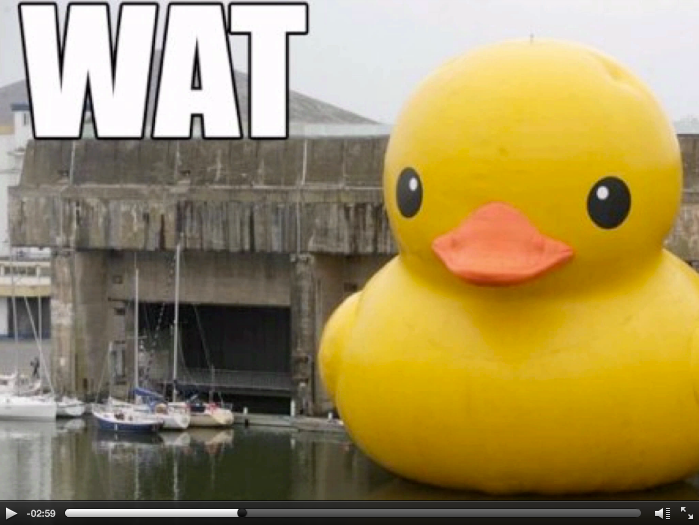
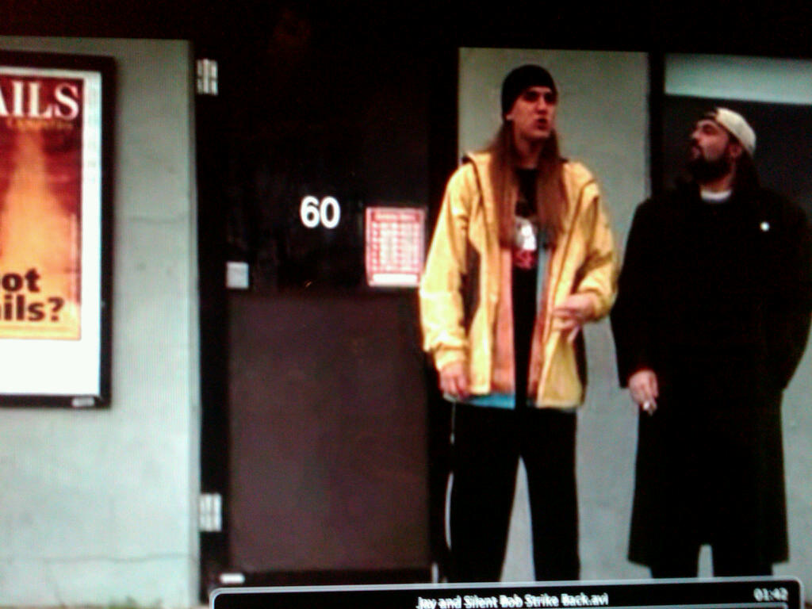

On becoming a professional software engineer.
Alias Rachel=

Life Lesson #1:
A Master’s
of Philosophy in Color is badass
And useless.

Life Lesson #2:
It’s hard to find an entry point into programming
if you don’t know
what you’re looking for.

Life Lesson #3:
Sometimes a crazy leap is a good idea.

Life Lesson #4:
It’s easier to learn in a community.
Start meeting people.





Life Lesson #3:
Sometimes a crazy leap is a good idea.
Life Lesson #8:
Keep learning.
Besides, everyone else is just pretending they already know.


Please follow us
on Twitter.
@rachelmyers is trying to win a bet with her boyfriend.
@eanakashima would just like to have more than 7 followers.